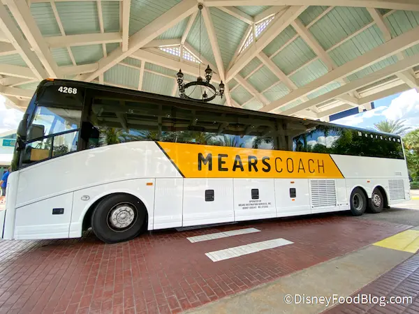

Uno dei vantaggi di alloggiare in un hotel Disney, quando si visita Walt Disney World era il trasporto gratuito da e per l'aeroporto di Orlando: bene, se seguite il podcast lo saprete giá, il Magical Express, la navetta gratuita che connetteva l'aeroporto di Orlando al Walt Disney World resort ha concluso le sue attivitá questa settimana: da ora in poi niente più trasporto gratuito al di fuori della bolla Disney. Chiaramente rimangono gratuiti tutti i mezzi di trasporto interno, invece: skyliner, monorotaie, battelli e bus. Oggi vi voglio parlare di alcune alternative - purtroppo tutte a pagamento - che rimpiazzano il Magical Express.
La prima alternativa di cui vi voglio parlare è…il Magical Express. Ma come, non hai detto che non esiste più? Corretto: il Magical Express targato Disney non esiste più, ma l'agenzia di trasporti che gestiva le corse per conto di Disney, la Mears, ha deciso di continuare il servizio, chiaramente rimuovendo tutti i riferimenti a Disney, e trasformandolo in un servizio a pagamento. Il nuovo nome è Mears Connect, lanciato esattamente il 1 Gennaio di quest'anno.
Mears Connect trasporta i suoi ospiti dall'aeroporto di Orlando al proprio Disney World hotel ccon shuttle bus, quindi condivisi con altre persone, ad un costo di $16 per adulto e $13.50 per bambino a tratta, bagagli inclusi. Il servizio è prenotabile in anticipo, online, e durante la prenotazione si dovranno indicare il volo con cui si arriva, l'hotel a cui si vuole andare, il numero di passeggeri e così via. In questo modo, Mears promette di limitare i tempi di attesa a massimo 20 minuti, una volta che si raggiunge il punto d'imbarco dello shuttle. Ecco il link per prenotare Mears Connect.
Mears offre anche un servizio Express, che per $250 andata e ritorno, per un massimo di 4 persone, promette di limitare ancora di più i tempi di attesa per lo shuttle - anche questa volta non privato. Anche il servizio Express è prenotabile sul sito Mears Connect.
La seconda alternativa, per quanto riguarda gli shuttle bus è Sunshine Flyer, che inizierà le sue corse il 1 febbraio 2022. Il servizio e i prezzi sono simili a quelli offerti dalla Mears, $17 adulti e $34 andata e ritorno, $12.50 per bambini, $25 andata e ritorno. Anche Sunshine Flyer è prenotabile online e vi verrà chiesto di selezionare un orario in cui vorrete prendere lo shuttle bus: non ci sará bisogno di indicare il vostro volo o altri dettagli. Anche Sunshine Flyer promette di non farvi aspettare piu di 20 minuti e di portarvi a destinazione in meno di 65 minuti. La cosa carina di questi shuttle è che i bus sono decorati come se fossero locomotive a vapore degli anni '20 e anche il personale di bordo è vestito come conducenti di treno d'epoca e ingegneri. Insomma, se volete un'esperienza tematizzata appena mettete piede ad Orlando, considerate Sunshine Flyer. Puoi prenotare Sunshine Flyer a questo link.
Terza alternativa, consigliata soprattutto a chi non vuole visitare solamente la bolla Disney è il noleggio di un'auto, come ho detto consigliato a chi vuole muoversi per orlando, magari visitare anche altre attrazioni locali, ma sconsigliato se volete rimanere dentro il walt disney world resort, dato che la maggior parte degli hotel hanno introdotto una tassa per il parcheggio, che non è più inclusa nel prezzo della camera. Quindi, se state in un hotel disney, occhio a questa tassa sul parcheggio, applicata a seconda del numero di notti in cui starete nella bolla Disney.
Ultima alternativa: Uber o Lyft, ovvero i due sistemi di car sharing che dominano le strade americane. Una corsa con UberX tra l'aeroporto di Orlando e un hotel di Walt Disney World e viceversa si aggira sui $30 - $40 mentre UberXL si aggira sui $50. Ill vantaggio è chiaro: servizio personalizzato, veloce, diretto e non condiviso con altri passeggeri. Quindi se siete in due o in tre, Uber o Lyft potrebbero essere la soluzione più veloce ed economica. Consiglio di installare entrambe le app e confrontare i prezzi al momento, dato che i due servizi sono praticamente identici.
Per quanto riguarda le alternative più comuni al defunto Magical Express, questa è la panoramica al momento, ma voglio ricordare brevemente che è in costruzione una linea ferroviaria per treni ad alta velocità che promette non solo di collegare l'aeroporto di Orlando a Disney, probabilmente disney Springs per essere precisi, ma addirittura tutta la costa est della florida, questo tratto di ferrovia è già costruito, e poi in futuro estendersi fino a Tampa, che è nella costa Ovest. Insomma, un progetto ambizioso targato Brightline che però è ancora in fase di realizzazione e probabilmente non vedrá la luce almeno fino al 2023 - 2024.
Insomma, le alternative al Magical Express non mancano, come ho detto, dispiace che un servizio gratuito sia stato tagliato, ma di tagli, quando si parla di Disney ne abbiamo visti parecchi negli scorsi anni, ma è anche interessante vedere come tante compagnie locali non hanno perso tempo per colmare il vuoto e arriveranno addirittura alternative piu interessanti in futuro.
VISITA IL MIO ONLINE SHOP!
Magliette, adesivi e tanto altro, tutti dedicati al mondo dei parchiSe quest'articolo è stato interessante, non dimenticarti di seguirci sul podcast “Aperitivo a Main Street, U.S.A.”, disponibile su Spotify, Anchor e tutte le altre maggiori piattaforme audio!